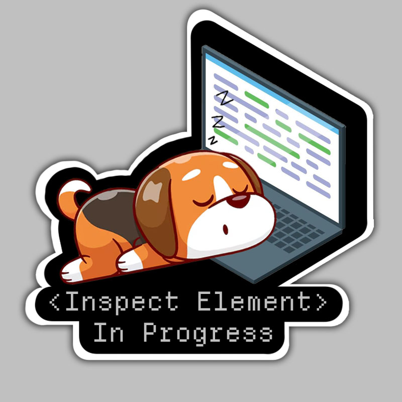

inspect element

Inspect Element - In Browser Coding Tool
Niveah Jackson
The “inspect element’ tool also known as the developer tool which lets you view and interact with the code behind any website. This tool is most commonly used for web development, learning web design, and troubleshooting. In web development, developers use it to debug issues, understand how websites are built, and test code changes. In learning web design, beginners can explore the code of existing websites to learn about HTML(Hypertext Markup Language) and CSS(Cascading Style Sheets) structure. In troubleshooting, people can identify potential issues with a website’s layout or functionality by inspecting the code.
Features
There are many features to this tool but the most common ones include debugging web pages, learning and experimentation, and web design inspiration.
During the debugging process you can identify issues which allows developers to quickly find and fix issues without layout, styles, or scripts by inspecting elements and viewing any related CSS and JavaScript. You can also located console errors which can display JavaScript errors and warnings, helping developers troubleshoot issues.
With learning and experimentations a user can do two types: CSS experimentation and HTML structure. CSS experimentation, users can modify CSS properties live to see how changes affect the design without permanently altering the code. With HTML structure it allows learners to understand the structure of a webpage, including how elements are nested and styled.
Using this tool with web design inspiration you can access copying styles and color and font identification. Users can inspect a website to see how specific styles are applied, which can inspire their own designs or help replicate certain effects while searching for copying styles. Color and font indentification can easily identify colors, fonts, and sizes used on a webpage, which is useful for design projects.
How to Access
There are many different ways to access “Inspect Element”, some more difficult then others but they all lead to the same place.
It also depends on what device you are using to access this tool. Some systems may not have the same features as others do. The most common electronics used to access the “Inspect Element” tool are a Windows/Linux or a Mac.
Accessing the “Inspect Element” may also be different depending in what webpage you are using. Whether it is Chrome, Firefox, or Safari, you will be able to find a way to access this tool.
Access on Chrome
Method 1:
Right-click anywhere on the webpage, and at the very bottom of the menu that pops up, click Inspect.
Method 2:
Click the hamburger menu (the icon with three stacked dots) on the far-right of your Google Chrome toolbar, click More Tools, then select Developer Tools.
Method 3:
Press command + option + I on a Mac, or Ctrl + Shift on a PC to open “Inspect Element” without clicking anything
Access on Firefox
Method 1:
Right-click anywhere on the page and click Inspect at the bottom of the menu.
Method 2:
Click the hamburger menu (three horizontal lines at the top-right corner of the window), select More Tools, then click Web Developer Tools
Method 3:
The keyboard shortcut on Firefox is command + option + I for Macs and Control + Shift + C for PCs.
Access on Safari
- Click the Safari dropdown in the top navigation bar above the Safari window, and then click Preferences.
- Navigate to Advanced, and check the box at the bottom of the window by Show Develop menu in the menu bar. Close the window.
- Now, you should be able to right-click anywhere on the page and click Inspect Element to open the Elements pane.
- The pane should appear along the bottom of your window. To move it to a side alignment and give yourself a little more space to look at the code, click the Dock to right of window (or left of window) option on the top-left of the pane, next to the “X”
Resources
Sources and links: